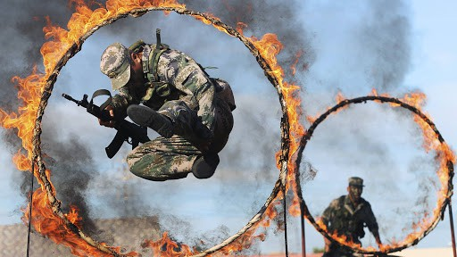
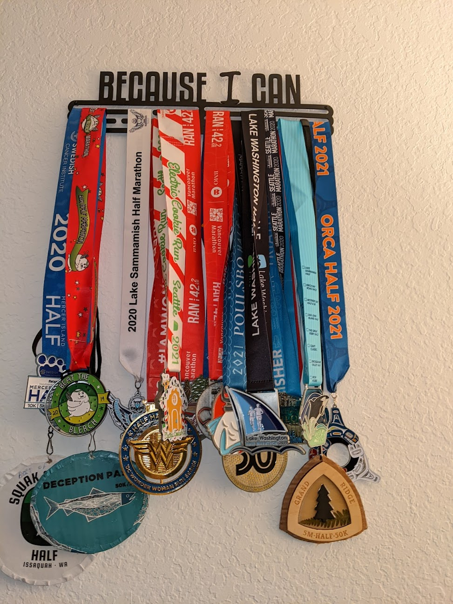

On Saturday November 13th 2021, I woke up at 5:00 am, I did some prep, read for a bit before starting my almost 20 mile bike ride to Grand Ridge Park, Issaquah. I arrived just in time to get my bib and run my first ever trail race, the Grand Ridge Half Marathon. Despite all my doubts and fears,the run went pretty well, 3 hours 18 minutes kind of flew by before I reached the finish line. After the race, I chatted with fellow racers, loaded some more calories before biking 20 miles home. It was a great day. I know people who have done crazier things but most people find it unfathomable that I’d bike 20 miles to and from a running race. I could have slept in a bit and just Ubered to the race, I could have not run the race at all and gone to brunch instead. All those were perfectly acceptable options that would have little to no consequences and I chose the hard one. You are probably wondering why. Great, because this post is all about that, why I keep running races despite having no real chance at becoming an elite athlete.
- Sense of accomplishment.
Lets start with the obvious, it feels really good to achieve things. In case its not obvious, I tick most boxes of the type-A persona. Its in my DNA to push myself and chase rewards. All the work that goes into planning and training for a race actually invirogates me; receiving medals inspires me to chase even more. I obviously look happy in this photo and you know why? Despite the challenges and everything else happening in my life, I would be making a significant accomplishment that day. There is joy in that.

- Resilience.
The last time I ran a marathon, I told the world about it. I just had to share how limitless I felt, how unhinged, how small the world felt, a literal oyster. If you are still not convinced, take it from performance athletes who train at high altitudes with significantly less oxygen so as to crash it on the ground or military trainees who jump through rings of fire to better prepare for real threats.

Simply put, Doing hard things simply makes you better equipped for life’s challenges which you can count on to come uninvited.- Structure.
Did I mention how much we Type-A folks love structure and organisation? Well, I definitely do and I love that races puts non-negotiable blocks on my calendar for training and recovering. Contrary to what you may expect, these constraints makes scheduling and time-management easier. An added bonus of structure is much needed stability in the chaotic world we live in. When all else is in shambles, I can always look forward to my long run at the end of the week.
- Goals
As I emphasized before, there is merit to having goals, something to work towards. A race provides just that, a time boxed commitment with lots of opportunity for growth and connection. In addition to known mental health benefits, goals have also been proven to increase longevity, there are side effects.
- Race photos
There is no denying that bibs and medals add an element of bad-assery to any action shot. I mean, need I say more?

- Because I can.

This medal rack hangs in my living room and no I don’t mean it in a cocky way. I run races to not only push my limits but also appreciate what my body is capable of. This body has endured hours of insane feats, recovered from eating orders and continues to redefine its limits. While the world continues to police how I should look and feel, I run because I effing can.
So there goes my reasons. I have relatively grand plans for the new year, some of which will leave me questioning all my life choices. In those moments I’ll count on these reasons to power me through. Now that you know my reasons, what challenges are you taking on next year? What are your why’s? Irrespective of what they are, I hope you are inspired to voraciously go after them. See you at the start line!